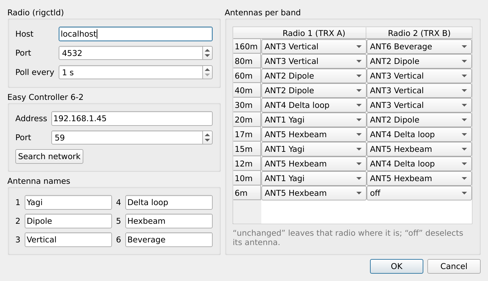
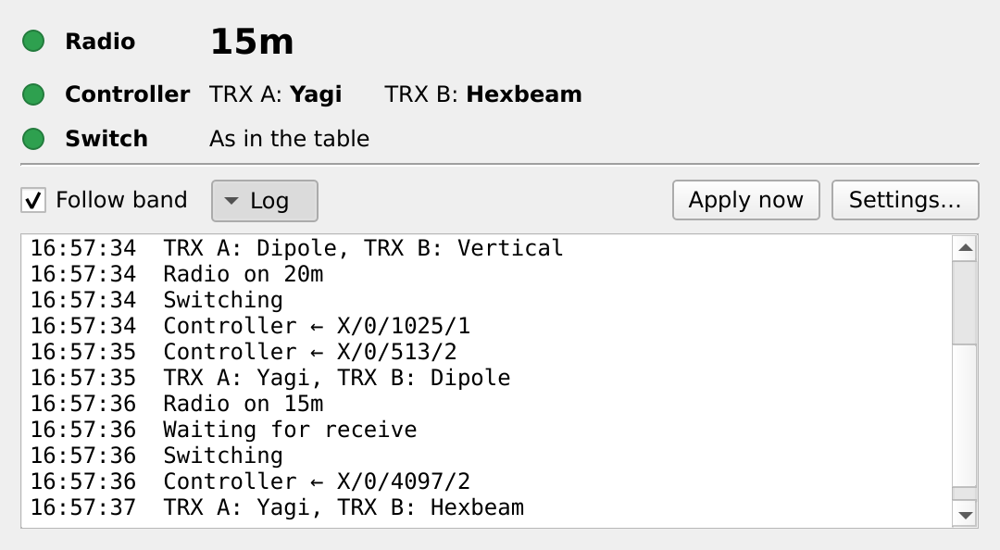

Download
Pick your system. Nothing to install besides the app; it needs Hamlib's rigctld
for your radio, which your logger usually runs already.
Windows
Windows 10 and 11, 64-bit
Download for Windowsqro-easy-controller-hamlib-windows-x64.zip
Unzip, then run qro-easy-controller-hamlib.exe. If Windows SmartScreen appears:
More info → Run anyway.
macOS
macOS 13 or later, Apple silicon and Intel
Download for macOSqro-easy-controller-hamlib-macos.dmg
Open the disk image and drag the app to Applications. The first time: System Settings → Privacy & Security → Open Anyway, and allow local network access.
Linux
64-bit PC, any recent distribution
Download for Linuxqro-easy-controller-hamlib-linux-x86_64.AppImage
Make it executable and run it:chmod +x qro-easy-controller-hamlib-linux-x86_64.AppImage.
It adds itself to the application menu.
Not signed with a paid certificate, so Windows and macOS ask once before the first start. Older versions: all releases.
How it works
It reads the band from Hamlib's rigctld, the same one QLog, WSJT-X and other
programs already use, and tells the Easy Controller over your network which antenna each radio gets.
What it does
A small window that runs next to your logger.
Follows the band
When the radio changes band, both radios go to the antennas in your table: an antenna, off, or unchanged, per band.
Switches only on receive
While a radio transmits, the change waits. No hot switching.
Works with first-win
Commands go out in an order where neither radio asks for the antenna the other one holds.
Finds the controller
One click searches your network. If the controller gets a new address, it finds it again by itself.
Shows the state
Green when the antennas are as in the table, yellow when someone switched by hand, red when something is missing.
Keeps trying
Radio off, rigctld restarted, controller rebooting: it waits and switches when everything is back.
Getting started
Five minutes, once.
- Put the Easy Controller on your network.
Enable its WiFi and join it to your access point, as in the 6-2 Easy Controller manual.
- Have rigctld running for your radio.
If your logger already starts it, nothing to do. Otherwise for example
rigctld -m <model> -r <port>. - Start Easy Controller Hamlib.
The settings open on the first start. The radio is
localhost, port4532. - Press Search network.
The controller's address fills in when it answers.
- Name your antennas and fill in the band table.
Change band on the radio and watch both radios move.
Screenshots
The settings, and the log of a band change.


In use at OH2GBA with a real Easy Controller 6-2. The controller has no published interface; the app speaks the protocol of its web page. Reports and ideas are welcome in the issues.
Not affiliated with QRO.cz. The controller's own interlocks stay in force whatever this app sends.